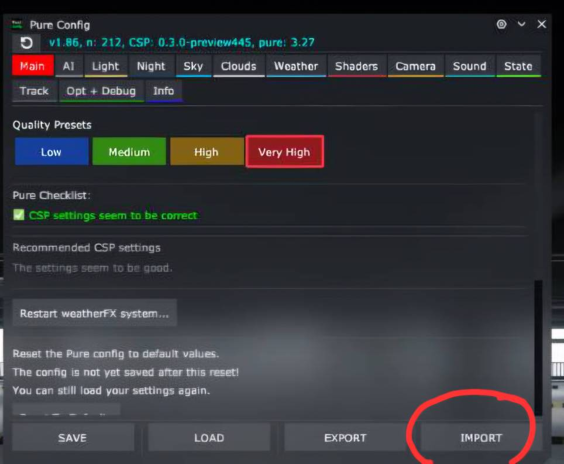
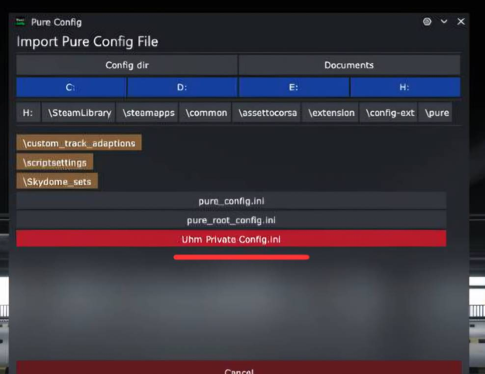

Step by step
مسیر انجام کار
\SteamLibrary\steamapps\common\assettocorsa\extension\config-ext\Pure
- فایل Pure Config را در مسیر بالا کپی کن.
- بازی را اجرا کن و نوار کناری سمت چپ را باز کن.
- پنل Pure Config را انتخاب کن و IMPORT را بزن.
- کانفیگ UHM را انتخاب کن و در پایان SAVE را بزن.

